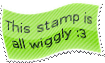
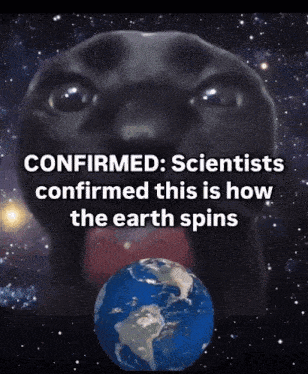
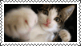
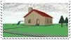
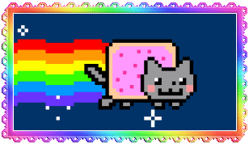
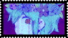

.png)




Neste espacinho maneiro, eu vou contar um pouco sobre mim! Então espero que tenha um ótimo momento lendo tudinho =D
Fav songs!
-Fall from the sky
-Fall from the sky PT.2
-Into the floor
-Let you go
-Alone in the dark
-Dance
-Bleed
-Dream
-Hands up!
-DANCE! Till We Die
-Faster N Harder
-So Perfect
-What Happens If I Can't Check My Myspace When
We Get There?
-Stick Stickly
-Catfish Soup
-Smile In Your Sleep
-Smashed Into Pieces
-King For A Day
-Caraphernelia
-So Far So Fake
-Hell Above
Fav hobbies!
-Dançar
-Cantar
-Jogar
-Desenhar
-Pintar
-Fazer sites
-Ouvir músicas
-Artesanato
-Garimpar brechós
-Sair com amigos (especialmente com a Luninha)
My fav album!
.gif)




Como da pra ver, eu gosto muuuito de Romanceplanet
Ele é um artista independente que faz música eletrônica
misturada com pop punk, hardstyle e Hyperpop.
eu gosto muito de ouvir as músicas dele pq a vibe que
ele transmite é dos anos 2000 (e eu sou apaixonado
pelos anos 2000).
É uma mistura de nostalgia com sensações liminares e
confortáveis.
Ele também sabe dançar muito bem os estilos Hardstyle
Jumpstyle e Shuffle Jumpstyle! Eu quero muito aprender a
dançar como ele :>